第02讲 一元一次方程的解法
课程标准 | 学习目标 |
①掌握等式的性质 ②掌握一元一次方程的解法 | 1. 掌握等式的性质及其应用． 2. 掌握一元一次方程移项、去括号、去分母的方法． |

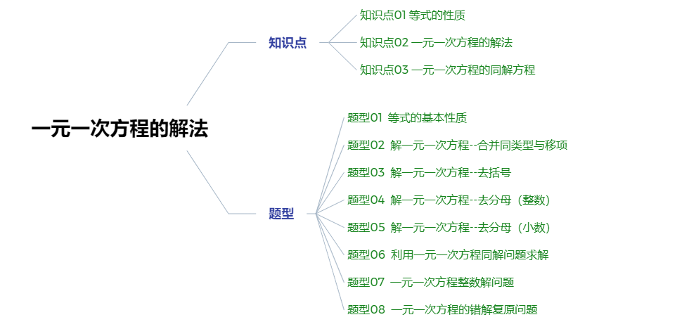
知识点01 等式的性质
性质1：等式两边加同一个数（或式子）结果仍得等式；
性质2：等式两边乘同一个数或除以一个不为零的数，结果仍得等式．
【即学即练1】
1．（23-24七年级上·湖南株洲·期末）下面利用等式性质对等式进行变形，错误的是（ ）
A．若 ，则
，则 B．
B． ，则
，则
C．若 ，则 D．若
，则 D．若 ，则
，则
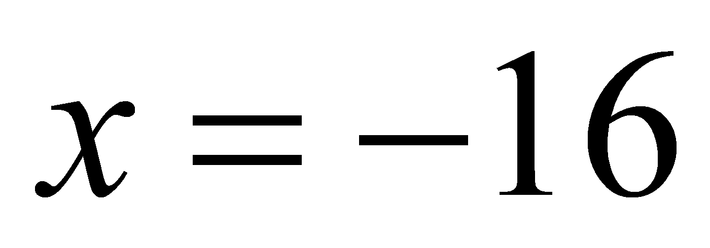
2．（23-24七年级上·湖南娄底·期末）运用等式性质进行的变形，下列正确的是（ ）
A．如果 ，那么
，那么 B．如果
B．如果 ，那么
，那么
C．如果，那么 D．如果
D．如果 ，那么
，那么
知识点02 一元一次方程的解法
◆合并同类项 把若干能合并的式子的系数相加，字母和字母的指数不变，起到化简的作用.
◆移项 把等式一边的某项变号后移到另一边，叫做移项.
◆去括号 括号前负号时，去掉括号时里面各项应变号.
◆去分母 在方程的两边都乘以各自分母的最小公倍数。去分母时不要漏乘不含分母的项。当分母中含有小数时，先将小数化成整数.
【注意】：（1）移项的时候注意变号；
（2）去括号的适合注意，若括号前是“-”号，那么去括号的时候要变号.
【即学即练2】
1．（23-24七年级上·黑龙江哈尔滨·期中）解方程
(1) ；
；
(2) ；
；
2．（24-25七年级上·黑龙江哈尔滨·阶段练习）解方程：
(1) ；
；
(2) ；
；
(3) ；
；
(4)
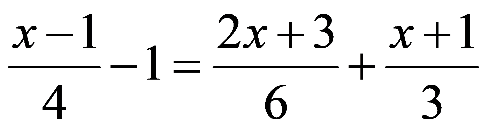
．知识点03 一元一次方程的同解方程
如果两个方程的解相同，那么这两个方程叫做同解方程，解决此类问题，通常是解其中一个方程，得到该方程解代入另一个方程求解字母的值.
【即学即练3】
1．（23-24七年级上·山东青岛·期末）若关于 的方程
的方程
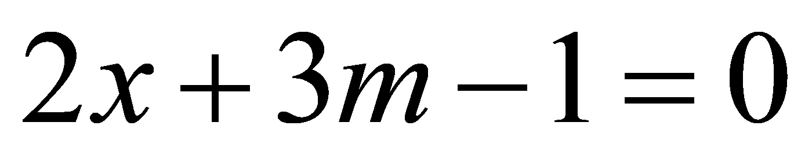
和方程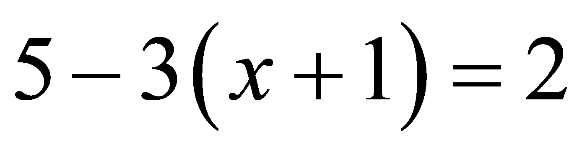
同解，则 的值等于 ．
的值等于 ．2．（23-24七年级下·吉林·开学考试）若方程 与
与
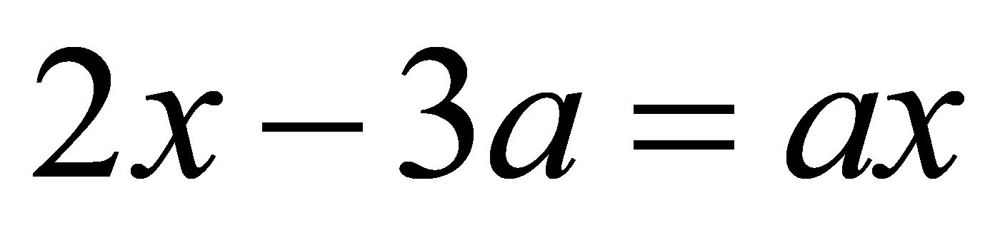
的解相同，则 的值是 ．
的值是 ．题型01 等式的基本性质
【典例1】（24-25七年级上·黑龙江哈尔滨·阶段练习）运用等式性质进行的变形，正确的是（ ）
A．若 ，则 B．若，则
，则 B．若，则
C．若 ，则
，则 D．若
D．若
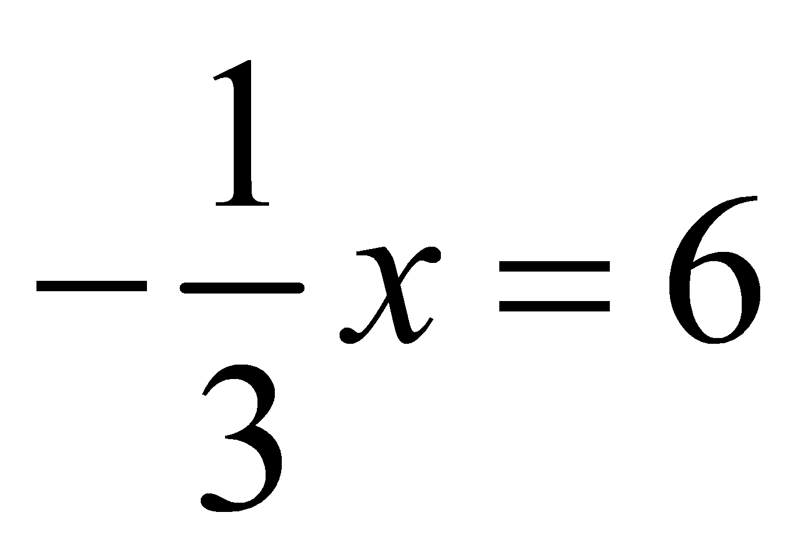
，则
【变式1】（24-25七年级上·全国·课后作业）已知等式，下列变形不正确的是（ ）
A． B．
B．
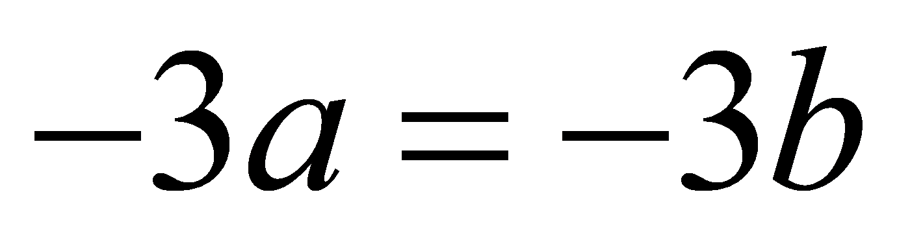
C．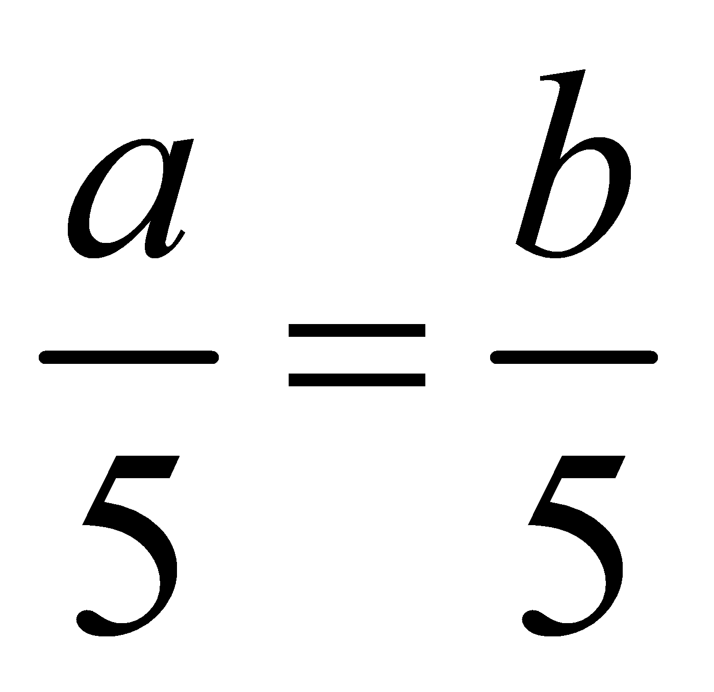
D．
【变式2】（24-25七年级上·全国·课后作业）下列等式变形正确的是（ ）
A．如果
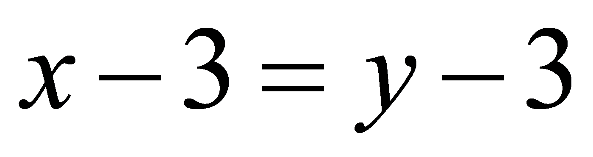
，那么 B．如果
B．如果 ，那么
，那么
C．如果 ，那么
，那么 D．如果
D．如果 ，那么
，那么
【变式3】（23-24七年级上·天津·期中）下列说法错误的是（ ）
A．若 ，则 B．若
，则 B．若 ，则
，则
C．若，则 D．若
D．若
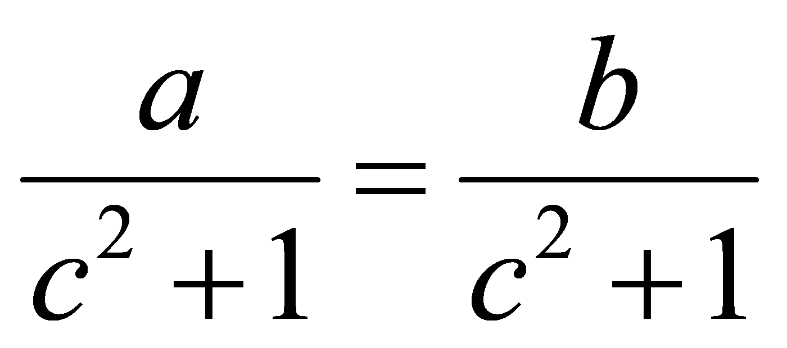
，则题型02 解一元一次方程--合并同类型与移项
【典例2】（23-24七年级上·江西宜春·期中）解方程：
(1) ；
；
(2) ．
．
【变式1】（24-25七年级上·四川凉山·期中）解下列方程：
(1) ；
；
(2) ．
．
【变式2】（24-25七年级上·全国·课后作业）解下列方程：
(1) ；
；
(2)
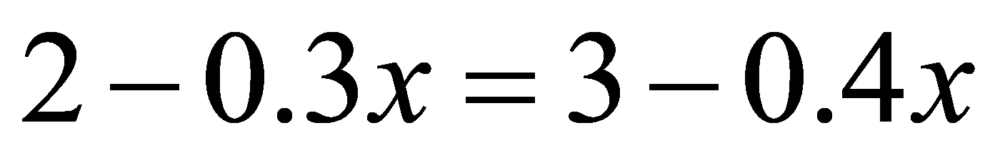
；(3) ；
；
(4) ．
．
【变式3】（24-25七年级上·全国·课后作业）解下列方程：
(1) ；
；
(2) ；
；
(3) ；
；
(4) ．
．
题型03 解一元一次方程--去括号
【典例3】（2024七年级上·全国·专题练习）解方程
(1) ；
；
(2) ；
；
(3)
【变式1】（24-25七年级上·全国·课后作业）解下列方程：
(1)
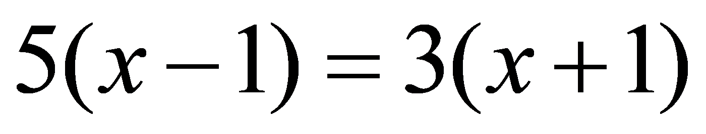
(2)
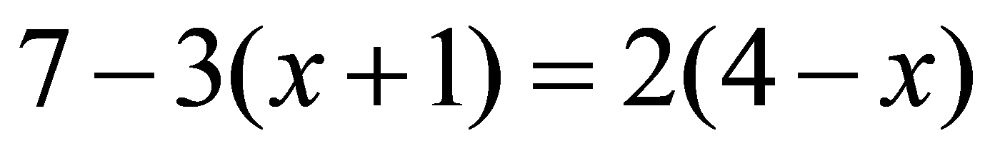
(3)
(4)
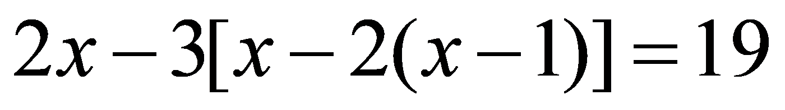
【变式2】（24-25七年级上·全国·课后作业）解下列方程：
(1)
(2)
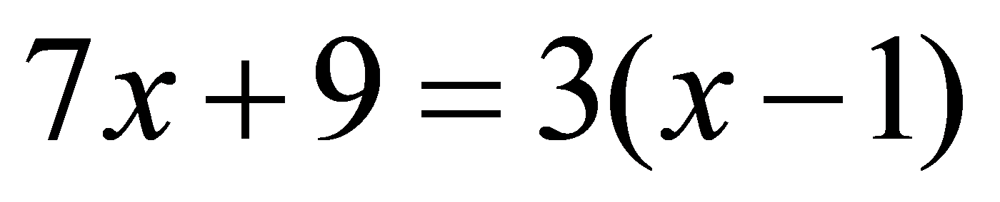
(3)
(4)
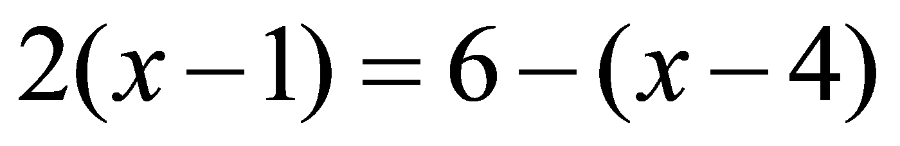
【变式3】（24-25七年级上·全国·单元测试）解方程：
(1)
(2)
(3)
题型04 解一元一次方程--去分母（整数）
【典例4】（23-24七年级上·四川遂宁·期末）解方程：
【变式1】（23-24七年级上·福建泉州·阶段练习）解方程∶ 
【变式2】（23-24七年级上·天津·期末）解方程：
(1)
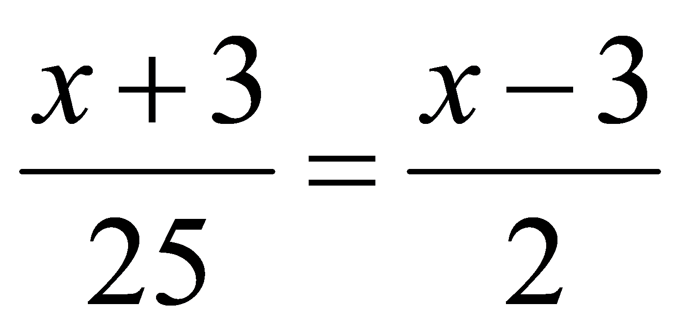
； (2)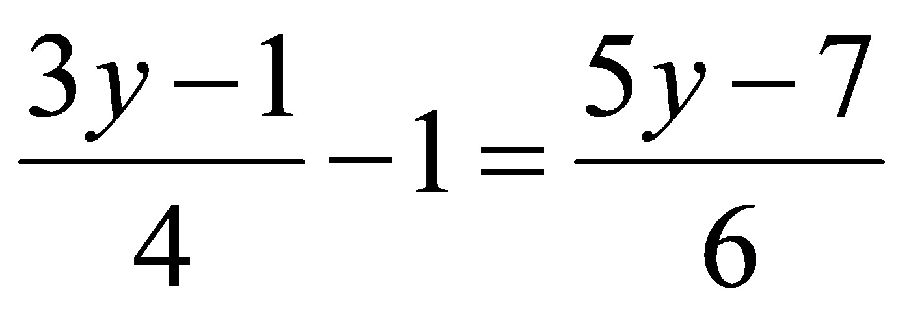
．【变式3】（23-24七年级下·重庆·开学考试）（1）解方程：
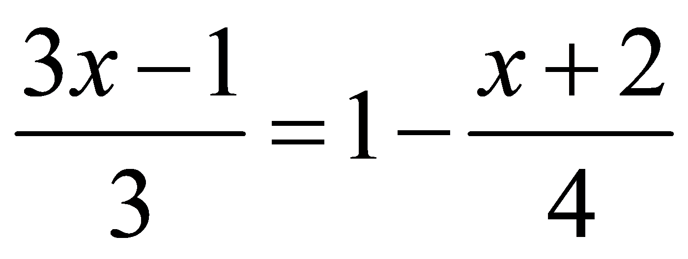
；（2）解方程：
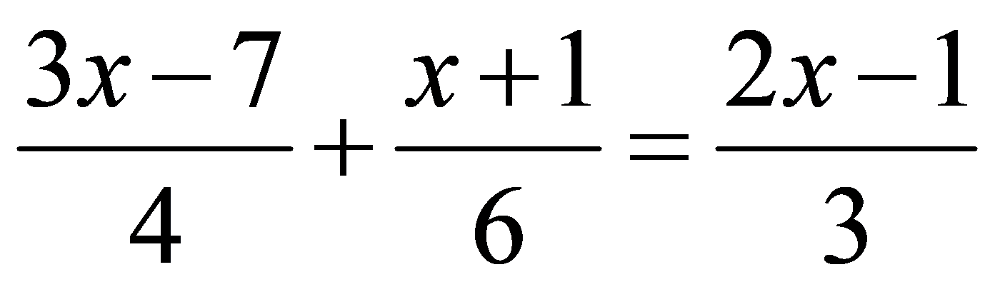
．题型05 解一元一次方程--去分母（小数）
【典例5】（24-25七年级上·全国·单元测试）解方程：
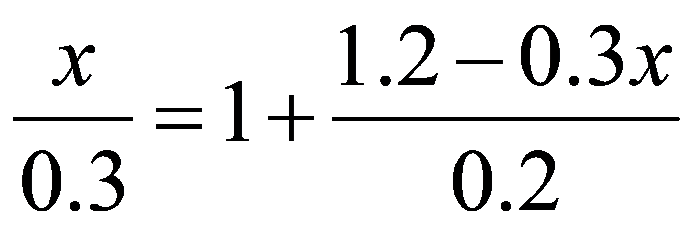
【变式1】（2024七年级上·全国·专题练习）解方程： ．
．
【变式2】（2024七年级上·全国·专题练习）解方程：
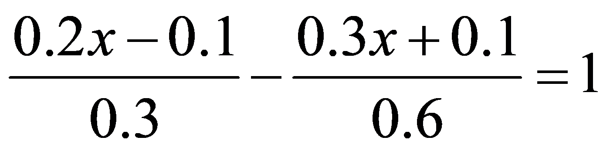
；【变式3】（24-25七年级上·重庆·阶段练习）解方程
(1)
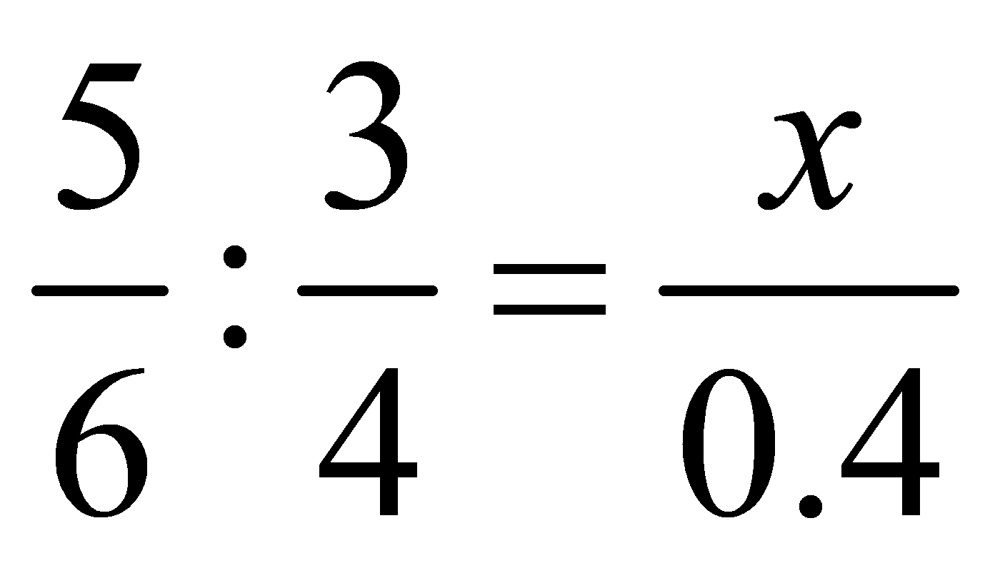
(2)
题型06 利用一元一次方程同解问题求解
【典例6】（24-25七年级上·安徽合肥·期中）已知方程 与方程
与方程
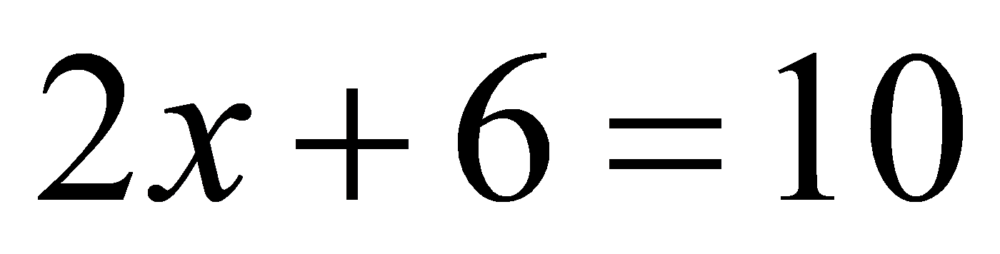
的解相同，则 的值为 ．
的值为 ．【变式1】（23-24六年级上·山东泰安·期末）若方程 与
与 的解相同，则a的值为 ．
的解相同，则a的值为 ．
【变式2】（23-24七年级上·全国·单元测试）若关于 的方程
的方程 和
和
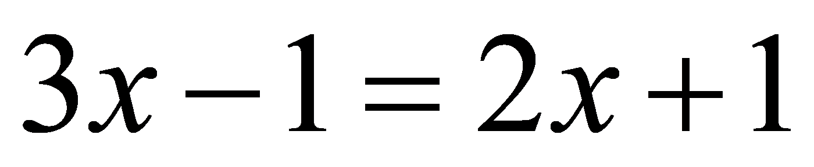
有相同的解，则 ．
．【变式3】（23-24七年级下·福建泉州·期中）若方程
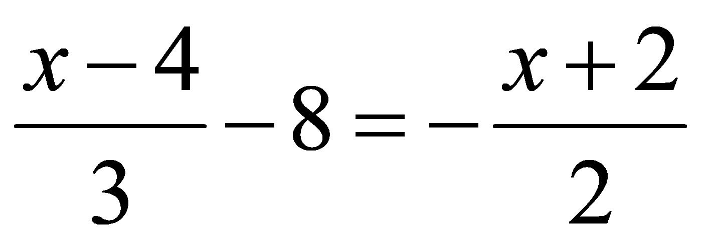
的解与关于x的方程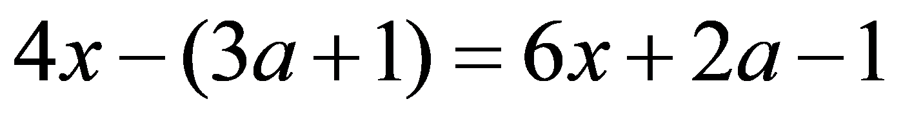
的解相同，则a的值为 ．题型07 一元一次方程整数解问题
【典例7】（23-24七年级上·江苏扬州·期末）若关于的方程 的解为正整数，整数的值是 ．
的解为正整数，整数的值是 ．
【变式1】（23-24七年级下·河南洛阳·期末）若关于的方程 的解为正整数，则所有满足条件的整数的值为 ．
的解为正整数，则所有满足条件的整数的值为 ．
【变式2】（23-24七年级下·重庆·期中）关于的一元一次方程 的解为整数，则所有整数
的解为整数，则所有整数 的和为 ．
的和为 ．
【变式3】（23-24七年级下·福建福州·阶段练习）已知关于的方程 的解是非负整数，则符合条件的所有整数
的解是非负整数，则符合条件的所有整数 的和是 ．
的和是 ．
题型08 一元一次方程的错解复原问题
【典例8】（23-24七年级上·宁夏银川·期末）下面是小彬同学解一元一次方程的过程，请认真阅读并完成相应任务．
 ．
．
 ，（第一步）
，（第一步）
 ，（第二步）
，（第二步）
 ，（第三步）
，（第三步）
 ，（第四步）
，（第四步）
 ．（第五步）
．（第五步）
(1)任务一：填空．
①以上求解步骤中，第一步的依据是________________________．
②第_________步开始出现错误，这一步错误的原因是_____________________．
(2)任务二：请直接写出该方程的解．
【变式1】（2024·宁夏银川·模拟预测）以下是圆圆解方程
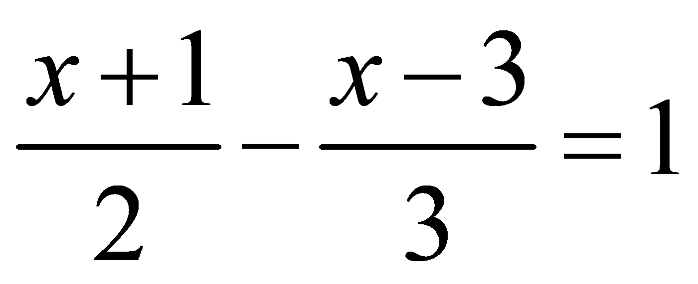
的解答过程．解：去分母，得
去括号，得
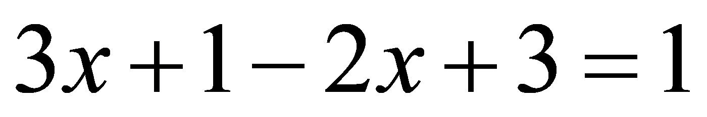
移项，合并同类项，得 ．
．
(1)圆圆的解答过程是否有错误？如果有错误，写出正确的解答过程；
(2)请尝试解方程 ．
．
【变式2】（23-24七年级下·吉林长春·期末）下面是小明同学解一元一次方程的过程，请认真阅读并完成相应任务．
解方程：
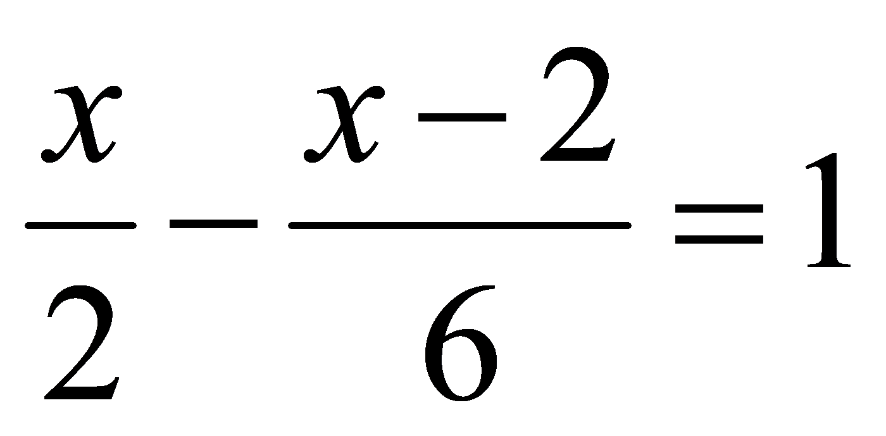
解：______，得
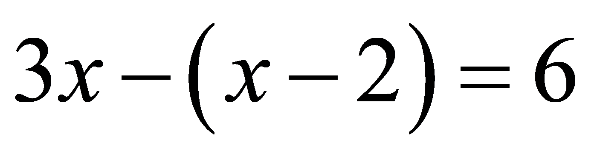
第一步去括号，得
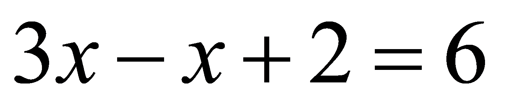
第二步移项，得 第三步
第三步
合并同类项，得 第四步
第四步
方程两边同除以2，得 第五步
第五步
(1)以上求解步骤中，第一步进行的是______；
(2)以上求解步骤中，第______步开始出现错误；
(3)请写出正确解方程的过程．
【变式3】（2024·宁夏吴忠·一模）以下是小明解方程的解答过程．
解：去分母，得 第一步
第一步
去括号，得第二步
移项，得 第三步
第三步
合并同类项，得第四步
(1)以上过程中是从第______步开始出错的．
(2)第一问中出现错误的原因____________．
(3)写出这个方程的正确解答过程．

一、单选题
1．（24-25九年级上·海南·阶段练习）若代数式 的值为4，则x的值是（ ）
的值为4，则x的值是（ ）
A． B．
B． C．1 D．9
C．1 D．9
2．（21-22七年级上·黑龙江哈尔滨·期中）下列方程变形正确的是（ ）
A．方程 移项得
移项得 ；
；
B．方程
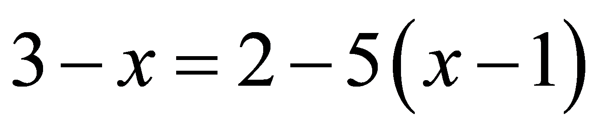
，去括号，得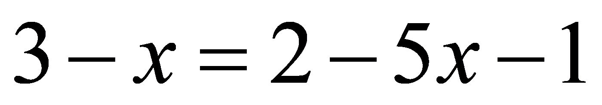
；C．若
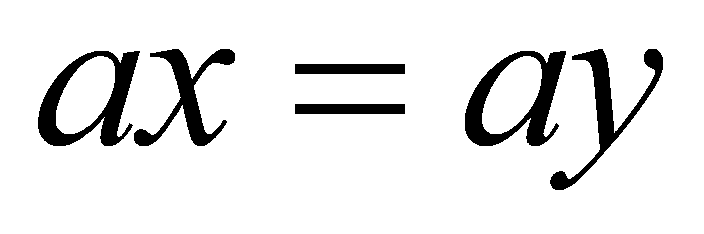
，则 ；
；D．方程
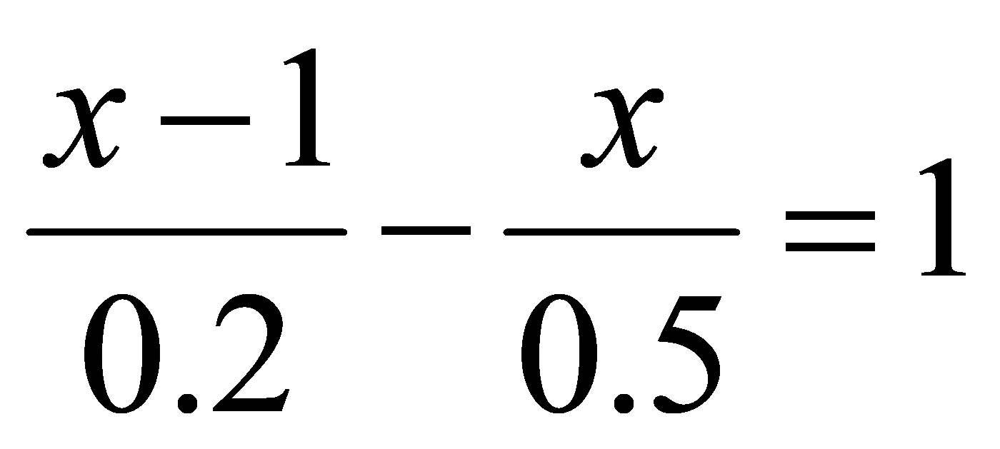
化成 ；
；3．（24-25七年级上·全国·期末）解方程 ，下列去分母的过程正确的（ ）
，下列去分母的过程正确的（ ）
A． B．
B．
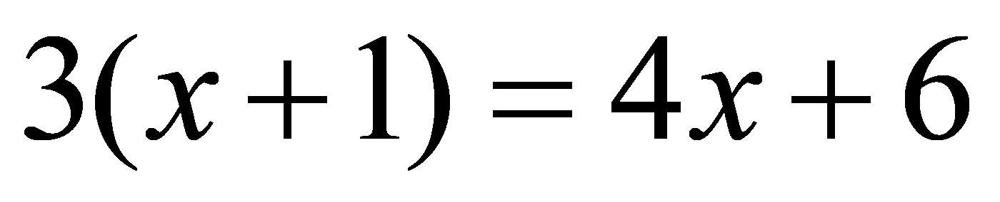
C． D．
D．
4．（23-24七年级下·全国·期中）关于x的方程 与
与 的解相同，则m等于（ ）
的解相同，则m等于（ ）
A． B．
B． C． D．4
C． D．4
5．（22-23八年级上·黑龙江哈尔滨·期中）小明在解方程
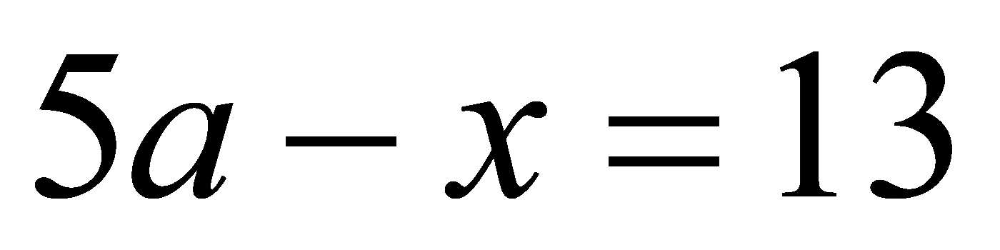
(x为未知数)时，误将 看作
看作 ，得方程的解为
，得方程的解为 ，则原方程的解为( )
，则原方程的解为( )A． B． C．
C． D．
D．
二、填空题
6．（24-25七年级上·湖南永州·阶段练习）若 与
与
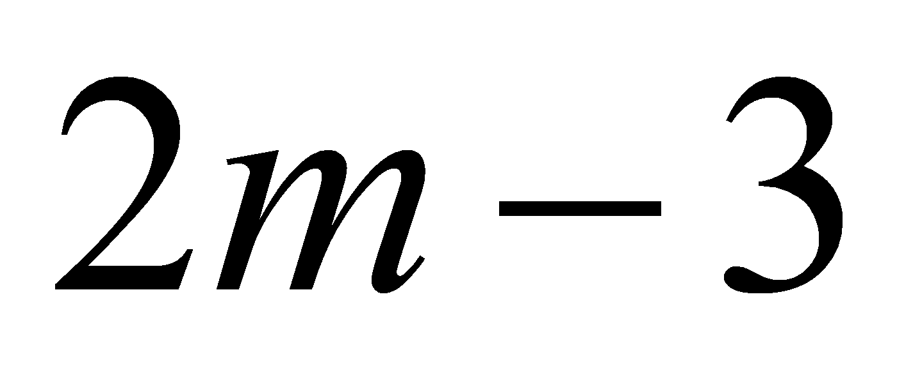
互为相反数，则 ．
．7．（23-24七年级上·全国·单元测试）如图是一个正方体的表面展开图，它所有相对的面上两数之和相等，则 的值为 ．
的值为 ．
8．（24-25七年级上·黑龙江哈尔滨·阶段练习）已知 与
与 是同类项，则
是同类项，则
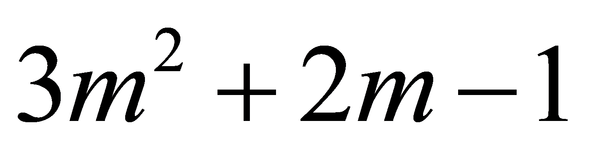
的值是 ．9．（23-24七年级下·全国·单元测试）已知 是方程
是方程 的解，求关于的方程
的解，求关于的方程 的解是 ．
的解是 ．
10．（23-24七年级上·重庆江津·期末）已知关于x的一元一次方程
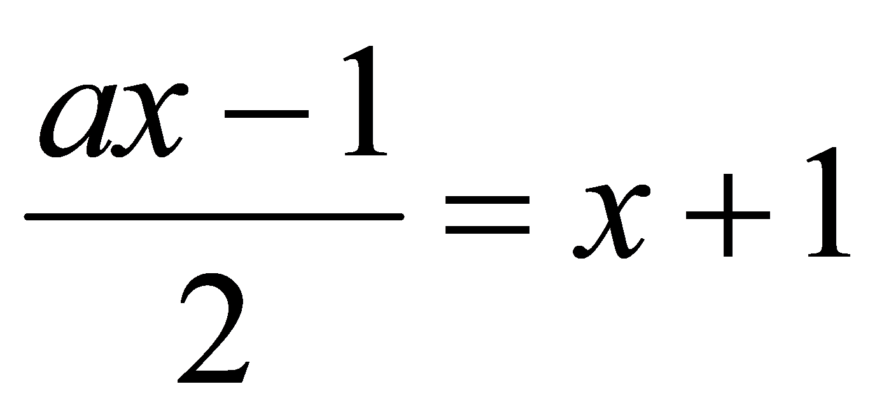
的解为整数，则所有满足条件的整数a的和为 .三、解答题
11．（24-25七年级上·湖南衡阳·阶段练习）解下列方程：
(1) ；
；
(2) ；
；
(3) ；
；
(4) ；
；
12．（24-25七年级上·黑龙江哈尔滨·阶段练习）解下列方程
(1)
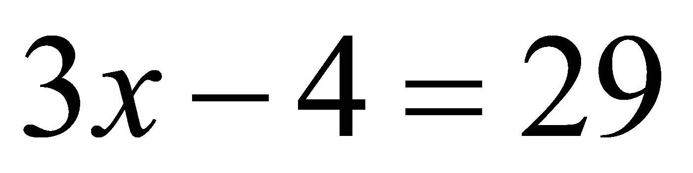
(2)
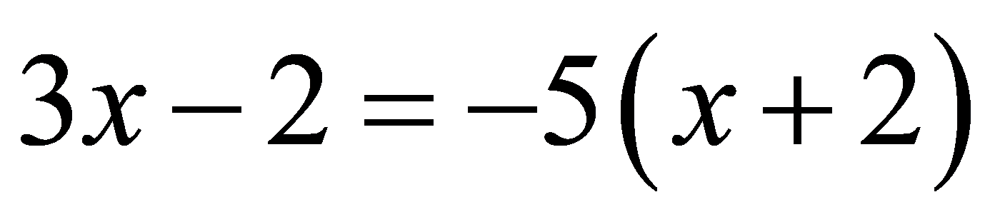
(3)
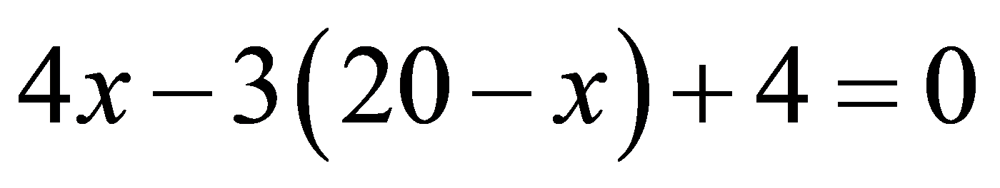
(4)
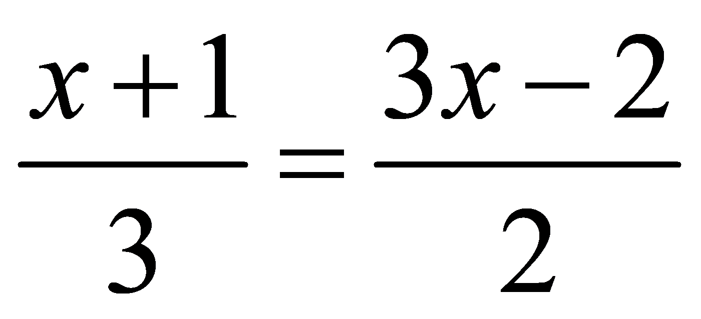
13．（24-25七年级上·山东德州·阶段练习）解方程：
(1) ；
；
(2)
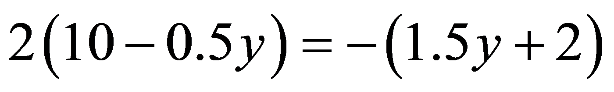
；(3) ；
；
(4)
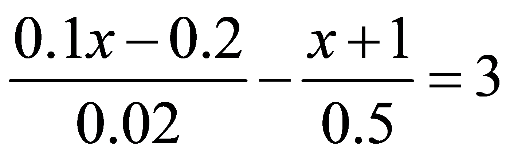
．14．（24-25七年级上·黑龙江哈尔滨·阶段练习）解下列方程
(1)
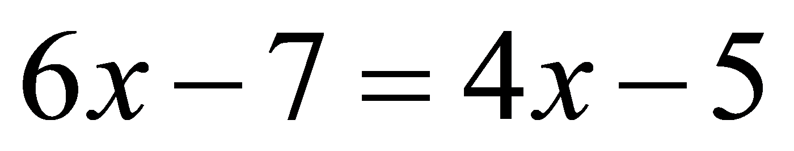
(2) ；
；
(3)
(4)
15．（24-25七年级上·黑龙江哈尔滨·阶段练习）解方程：
(1)
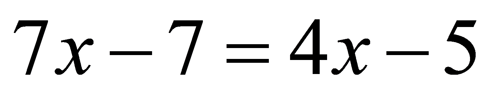
(2)
(3)
(4)
16．（23-24七年级上·河南郑州·期末）下面是小颖解方程 的过程：
的过程：
解：________，得 （第一步）
（第一步）
去括号，得 （第二步）
移项，得 （第三步）
合并同类项，得 （第四步）
方程两边同除以 ，得 （第五步）
，得 （第五步）
请认真阅读上面的过程，解答下列问题：
(1)以上求解步骤中，第一步进行的是_______，这一步的依据是______；
(2)以上求解步骤中，第_____步开始出现错误；
(3)请写出正确的解方程过程．
17．（23-24七年级上·江苏苏州·期中）已知关于x的方程 ，若该方程的解与方程
，若该方程的解与方程 的解互为相反数，求m的值．
的解互为相反数，求m的值．
18．（23-24七年级下·湖南衡阳·期中）对于整数 ，
， ，
， ，
， ，定义，如：
，定义，如： ；
；
(1)计算：的值；
(2)当时，求的值．
19．（24-25七年级上·黑龙江哈尔滨·阶段练习）观察下列关于x的方程，并回答问题．
①的解是；
② 的解是
的解是 ；
；
③ 的解是；
的解是；
…
(1)猜想方程 的解为
的解为 ______；
______；
(2)根据观察得到的规律，直接写出第2024个方程的解______；
(3)根据观察得到的规律，写出解为的方程是____________．
20．（23-24七年级上·江西上饶·阶段练习）定义：关于x的方程 与方程（
与方程（ 均为不等于0的常数）互为“反对方程”．例如：方程
均为不等于0的常数）互为“反对方程”．例如：方程 与方程
与方程 互为“反对方程”．
互为“反对方程”．
(1)若方程 与方程
与方程 互为“反对方程”，则
互为“反对方程”，则 ________．
________．
(2)若关于x的方程与方程互为“反对方程”，求 的值．
的值．
(3)若关于x的方程与其“反对方程”的解都是整数，求k的值．